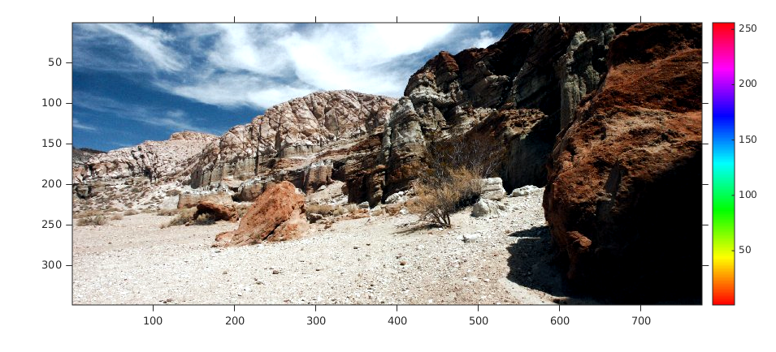
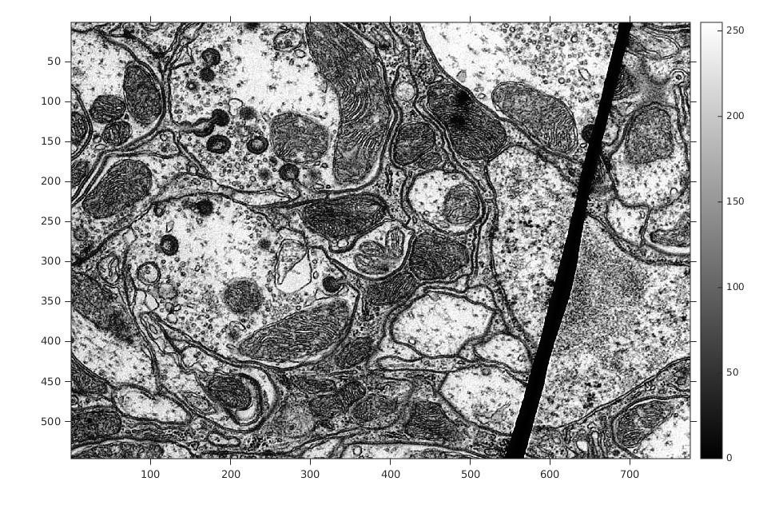

Contents
MyMainScript
tic;
Setting global data
curDir = pwd;
Input files
inp_imgFil_1 = fullfile(curDir, '..', 'data', 'barbara.png');
inp_imgFil_2 = fullfile(curDir, '..', 'data', 'TEM.png');
inp_imgFil_3 = fullfile(curDir, '..', 'data', 'canyon.png');
Output files
out_imgFil_1_a = fullfile(curDir, '..', 'images', '2a', 'barbara_out.mat');
out_imgFil_2_a = fullfile(curDir, '..', 'images', '2a', 'TEM_out.mat');
out_imgFil_3_a = fullfile(curDir, '..', 'images', '2a', 'canyon_out.mat');
out_imgFil_1_b = fullfile(curDir, '..', 'images', '2b', 'barbara_out.mat');
out_imgFil_2_b = fullfile(curDir, '..', 'images', '2b', 'TEM_out.mat');
out_imgFil_3_b = fullfile(curDir, '..', 'images', '2b', 'canyon_out.mat');
out_imgFil_1_c = fullfile(curDir, '..', 'images', '2c', 'barbara_out.mat');
out_imgFil_2_c = fullfile(curDir, '..', 'images', '2c', 'TEM_out.mat');
out_imgFil_3_c = fullfile(curDir, '..', 'images', '2c', 'canyon_out.mat');
out_imgFil_1_d = fullfile(curDir, '..', 'images', '2d', 'barbara_out.mat');
out_imgFil_2_d = fullfile(curDir, '..', 'images', '2d', 'TEM_out.mat');
out_imgFil_3_d = fullfile(curDir, '..', 'images', '2d', 'canyon_out.mat');
Actual Input
inp_im_1 = imread(inp_imgFil_1);
figure('Name', 'Original barbara.png'), imshow(out_im_1_a, map), colorbar, truesize;
inp_im_2 = imread(inp_imgFil_2);
figure('Name', 'Original TEM.png'), imshow(out_im_1_a, map), colorbar, truesize;
inp_im_3 = imread(inp_imgFil_3);
figure('Name', 'Original canyon.png'), imshow(out_im_1_a, map), colorbar, truesize;
inp_im_3_r = inp_im_3(:,:,1);
inp_im_3_g = inp_im_3(:,:,2);
inp_im_3_b = inp_im_3(:,:,3);
2(a): LinearContrastStretching
out_im_1_a = myLinearContrastStretching(inp_im_1);
figure('Name', 'Contrast-enhanced (Linear contrast stretching) barbara.png'), imshow(out_im_1_a, map), colorbar, truesize;
out_im_2_a = myLinearContrastStretching(inp_im_2);
figure('Name', 'Contrast-enhanced (Linear contrast stretching) TEM.png'), imshow(out_im_2_a, map), colorbar, truesize;
out_im_3_r_a = myLinearContrastStretching(inp_im_3_r);
out_im_3_g_a = myLinearContrastStretching(inp_im_3_g);
out_im_3_b_a = myLinearContrastStretching(inp_im_3_b);
out_im_3_a = cat(3, out_im_3_r_a, out_im_3_g_a, out_im_3_b_a);
figure('Name', 'Contrast-enhanced (Linear contrast stretching) canyon.png'), imshow(out_im_3_a, map), colorbar, truesize;

2(b): Histogram Equalization
out_im_1_b = myHE(inp_im_1);
figure('Name', 'Contrast-enhanced (Histogram Equalization) barbara.png'), imshow(out_im_1_b, map), colorbar, truesize;
out_im_2_b = myHE(inp_im_2);
figure('Name', 'Contrast-enhanced (Histogram Equalization) TEM.png'), imshow(out_im_2_b, map), colorbar, truesize;
out_im_3_r_b = myHE(inp_im_3_r);
out_im_3_g_b = myHE(inp_im_3_g);
out_im_3_b_b = myHE(inp_im_3_b);
out_im_3_b = cat(3, out_im_3_r_b, out_im_3_g_b, out_im_3_b_b);
figure('Name', 'Contrast-enhanced (Histogram Equalization) canyon.png'), imshow(out_im_3_b, map), colorbar, truesize;

2(c): Adaptive Histogram Equalization
out_im_1_c = myAHE(inp_im_1);
figure('Name', 'Contrast-enhanced (AHE) barbara.png'), imshow(out_im_1_b, map), colorbar, truesize;
out_im_2_c = myAHE(inp_im_2);
figure('Name', 'Contrast-enhanced (AHE) TEM.png'), imshow(out_im_1_b, map), colorbar, truesize;
out_im_3_r_c = myAHE(inp_im_3_r);
out_im_3_g_c = myAHE(inp_im_3_g);
out_im_3_b_c = myAHE(inp_im_3_b);
out_im_3_c = cat(3, out_im_3_r_c, out_im_3_g_c, out_im_3_b_c);
figure('Name', 'Contrast-enhanced (AHE) canyon.png'), imshow(out_im_1_b, map), colorbar, truesize;
Error using myAHE (line 6)
Not enough input arguments.
Error in myMainScript (line 71)
out_im_1_c = myAHE(inp_im_1);
2(d): Contrast-Limited Adaptive Histogram Equalization
out_im_1_d = myCLAHE(inp_im_1);
figure('Name', 'Contrast-enhanced (CLAHE) barbara.png'), imshow(out_im_1_b, map), colorbar, truesize;
out_im_2_d = myCLAHE(inp_im_2);
figure('Name', 'Contrast-enhanced (AHE) TEM.png'), imshow(out_im_1_b, map), colorbar, truesize;
out_im_3_r_d = myCLAHE(inp_im_3_r);
out_im_3_g_d = myCLAHE(inp_im_3_g);
out_im_3_b_d = myCLAHE(inp_im_3_b);
out_im_3_d = cat(3, out_im_3_r_d, out_im_3_g_d, out_im_3_b_d);
figure('Name', 'Contrast-enhanced (AHE) canyon.png'), imshow(out_im_1_b, map), colorbar, truesize;
Output
save(out_imgFil_1_a, 'out_im_1_a');
save(out_imgFil_2_a, 'out_im_2_a');
save(out_imgFil_3_a, 'out_im_3_a');
save(out_imgFil_1_b, 'out_im_1_b');
save(out_imgFil_2_b, 'out_im_2_b');
save(out_imgFil_3_b, 'out_im_3_b');
save(out_imgFil_1_c, 'out_im_1_c');
save(out_imgFil_2_c, 'out_im_2_c');
save(out_imgFil_3_c, 'out_im_3_c');
save(out_imgFil_1_d, 'out_im_1_d');
save(out_imgFil_2_d, 'out_im_2_d');
save(out_imgFil_3_d, 'out_im_3_d');
toc;